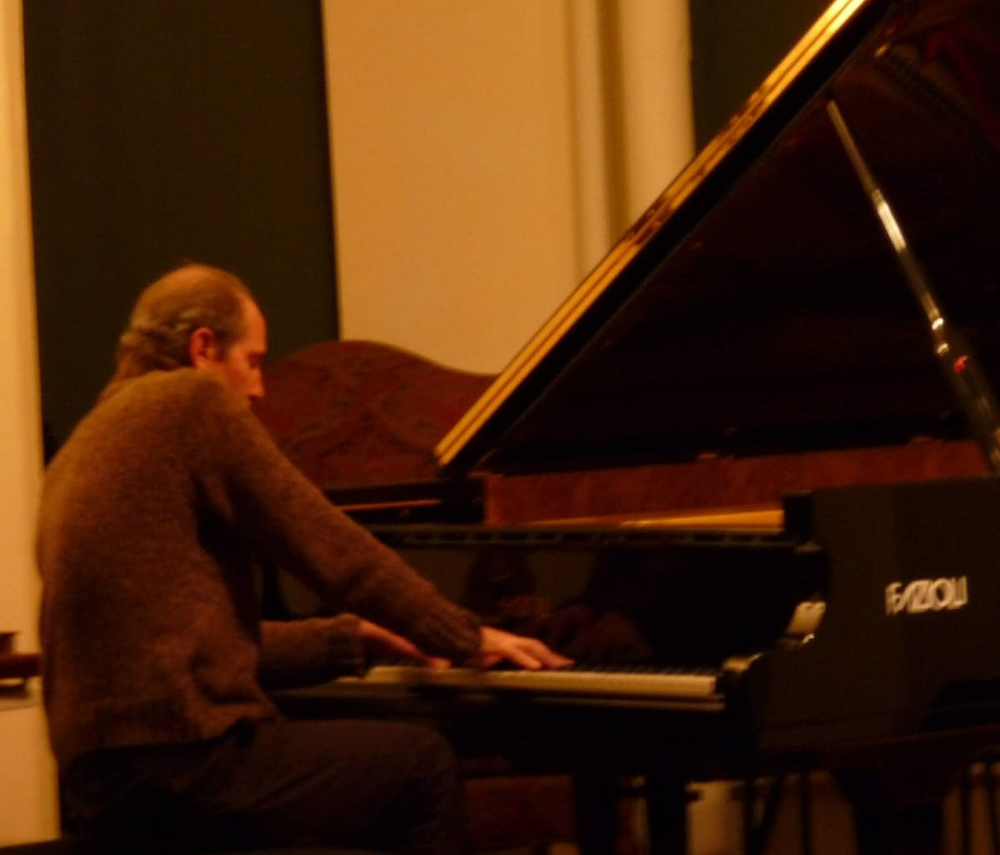
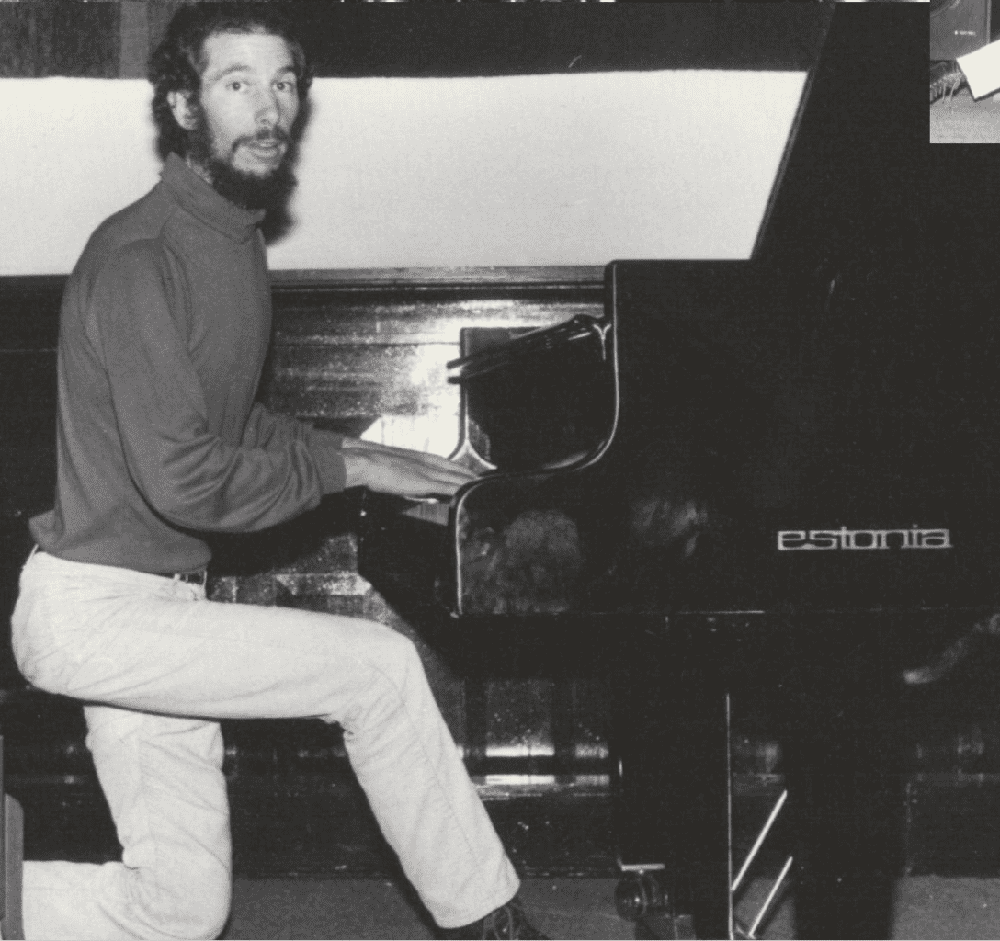

“Cohn’s intricate counterpoint and drama-infused harmonies are equally effective on muscular jazz-hued sprints and pointilistic passages. His cogent use of ethnic instruments goes well beyond stock poses of texture and transcendentalism. There are few American pianists who have Cohn’s talents.”
Bill Shoemaker, Downbeat Magazine
Bill Shoemaker, Downbeat Magazine
If there are nine ways to play jazz, this guy plays the eleventh.
Barry Schaffer, saxophonist
Barry Schaffer, saxophonist
Passion is key and it's unmistakable in Cohn's performances on piano, percussion, and a handful of Asian wind instruments. Cohn organizes his sounds against sturdy concepts... [his] episodic adventures range from seemingly spontaneous melodies that magically harmonize to wide-open spaces that give birth to tension filled dramas.
Sam Prestiani, Jazziz

Sam Prestiani, Jazziz
A 'total music' that is an emblem of what is the world of sounds today.
Vittorio Lo Conte, MusicZoom
Vittorio Lo Conte, MusicZoom
Steve Cohn is easily the most underrated improviser in America. His albums are unfailingly complex and fascinating, but what really sets Cohn apart is the depth of his inspiration and the passion of his music. Nobody and I mean nobody taps into their muse with more insight or creativity. Steve Cohn is the great hidden secret of American jazz.
Carl Baugher, Goldmine & Tracking Angle

Carl Baugher, Goldmine & Tracking Angle
I would say he is the Jackson Pollock of the Shakuhachi world, bravely brandishing wild energetic splashes of adventurous tones. His playing shows a kind of freedom that can happen when personal vision breaks the boundaries of tradition. Anyone with an open mind will benefit from his workshop.
Perry Yung, shakuhachi maker
Perry Yung, shakuhachi maker
Moving and magical. There's Mary Lou Williams, Bud Powell, Ursula Oppens, and Steve Cohn.
Tony Martin, painter
Tony Martin, painter